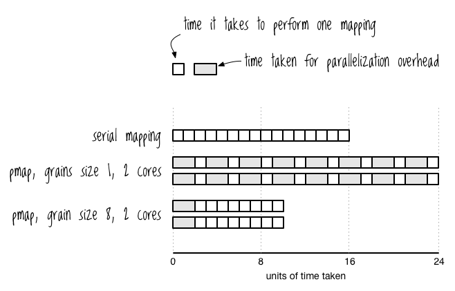

Atoms, Refs, Vars, and Cuddle Zombies
Clojure Metaphysics
Clojure Metaphysics
Cuddle Zombies
Cuddle Zombies
Cuddle Zombies in Ruby
Cuddle Zombies in Ruby
class CuddleZombie # attr_accessor is just a shorthand way for creating getters and # setters for the listed instance variables attr_accessor :cuddle_hunger_level, :percent_deteriorated def initialize(cuddle_hunger_level = 1, percent_deteriorated = 0) self.cuddle_hunger_level = cuddle_hunger_level self.percent_deteriorated = percent_deteriorated end end fred = CuddleZombie.new(2, 3) fred.cuddle_hunger_level # => 2 fred.percent_deteriorated # => 3 fred.cuddle_hunger_level = 3 fred.cuddle_hunger_level # => 3
Cuddle Zombies in Multi-Thread (1/2)
Cuddle Zombies in Multi-Thread (1/2)
if fred.percent_deteriorated >= 50 Thread.new { database_logger.log(fred.cuddle_hunger_level) } end

Cuddle Zombies in Multi-Thread (2/2)
Cuddle Zombies in Multi-Thread (2/2)
fred.cuddle_hunger_level = fred.cuddle_hunger_level + 1 # At this time, another thread could read fred's attributes and # "perceive" fred in an inconsistent state unless you use a mutex fred.percent_deteriorated = fred.percent_deteriorated + 1
Clojure Metaphysics
Clojure Metaphysics
Atoms
clojure.core/atom
clojure.core/atom
Cuddle Zombies in Clojure
Cuddle Zombies in Clojure
(def fred (atom {:cuddle-hunger-level 0 :percent-deteriorated 0})) @fred ;; => {:cuddle-hunger-level 0, :percent-deteriorated 0} (let [zombie-state @fred] (if (>= (:percent-deteriorated zombie-state) 50) (future (println (:cuddle-hunger-level zombie-state)))))

clojure.core/swap!
clojure.core/swap!
swap! fred (1/2)
swap! fred (1/2)
(def fred (atom {:cuddle-hunger-level 0 :percent-deteriorated 0})) (merge-with + @fred {:cuddle-hunger-level 1}) ;; => {:cuddle-hunger-level 1, :percent-deteriorated 0} (swap! fred (fn [current-state] (merge-with + current-state {:cuddle-hunger-level 1}))) ;; => {:cuddle-hunger-level 1, :percent-deteriorated 0} @fred ; => {:cuddle-hunger-level 1, :percent-deteriorated 0}
swap! fred (2/2)
swap! fred (2/2)
(def fred (atom {:cuddle-hunger-level 0 :percent-deteriorated 0})) (defn increase-cuddle-hunger-level [zombie-state increase-by] (merge-with + zombie-state {:cuddle-hunger-level increase-by})) (increase-cuddle-hunger-level @fred 10) ;; => {:cuddle-hunger-level 12, :percent-deteriorated 1} (swap! fred increase-cuddle-hunger-level 10) ;; => {:cuddle-hunger-level 12, :percent-deteriorated 1} @fred ;; => {:cuddle-hunger-level 12, :percent-deteriorated 1}
clojure.core/update-in
clojure.core/update-in
update-in fred
update-in fred
(update-in {:a {:b 3}} [:a :b] inc) ; => {:a {:b 4}} (update-in {:a {:b 3}} [:a :b] + 10) ; => {:a {:b 13}} (swap! fred update-in [:cuddle-hunger-level] + 10) ; => {:cuddle-hunger-level 22, :percent-deteriorated 1} (let [num (atom 1) s1 @num] (swap! num inc) (println "State 1:" s1) (println "Current state:" @num)) ; => State 1: 1 ; => Current state: 2
clojure.core/compare-and-set!
clojure.core/compare-and-set!
clojure.core/compare-and-set! examples
clojure.core/compare-and-set! examples
;; first we make a demonstration atom (def a (atom 0)) ;; #'user/a ;; failing to set the demonstration atom because the old-value does not match. (compare-and-set! a 10 20) ;;=> false ;; as you can see there was no change to the atom @a ;;=> 0 ;; but when the old-value matches the atom is set to the new-value. (compare-and-set! a 0 10) ;;=> true @a ;;=> 10
clojure.core/reset!
clojure.core/reset!
reset! fred
reset! fred
(reset! fred {:cuddle-hunger-level 0 :percent-deteriorated 0}) @fred ;; => {:cuddle-hunger-level 0 ;; :percent-deteriorated 0}
clojure.core/add-watch
clojure.core/add-watch
clojure.core/add-watch example
clojure.core/add-watch example
(def a (atom 0)) (add-watch a :count-to-3 (fn [k r old-state new-state] (println "changed from" old-state "to" new-state) (when (>= new-state 3) (remove-watch a :count-to-3)))) ;; => #<Atom@3287a10: 0> (dotimes [_ 5] (swap! a inc)) ;; => changed from 0 to 1 ;; => changed from 1 to 2 ;; => changed from 2 to 3 ;; => nil @a ;; => 5
add-watch fred
add-watch fred
(reset! fred {:cuddle-hunger-level 22 :percent-deteriorated 2}) (add-watch fred :fred-shuffle-alert shuffle-alert) (swap! fred update-in [:percent-deteriorated] + 1) ; => All's well with :fred-shuffle-alert ; => Cuddle hunger: 22 ; => Percent deteriorated: 3 ; => SPH: 2134 (swap! fred update-in [:cuddle-hunger-level] + 30) ; => Run, you fool! ; => The zombie's SPH is now 5044 ; => This message brought to your courtesy of :fred-shuffle-alert
Validators (1/2)
Validators (1/2)
(defn percent-deteriorated-validator [{:keys [percent-deteriorated]}] (and (>= percent-deteriorated 0) (<= percent-deteriorated 100))) (def bobby (atom {:cuddle-hunger-level 0 :percent-deteriorated 0} :validator percent-deteriorated-validator)) (swap! bobby update-in [:percent-deteriorated] + 200) ;; This throws "Invalid reference state"
Validators (2/2)
Validators (2/2)
(defn percent-deteriorated-validator [{:keys [percent-deteriorated]}] (or (and (>= percent-deteriorated 0) (<= percent-deteriorated 100)) (throw (IllegalStateException. "That's not mathy!")))) (def bobby (atom {:cuddle-hunger-level 0 :percent-deteriorated 0} :validator percent-deteriorated-validator)) (swap! bobby update-in [:percent-deteriorated] + 200) ; This throws "IllegalStateException: That's not mathy!"
Clojure Metaphysics
Clojure Metaphysics
Refs
clojure.core/ref
clojure.core/ref
clojure.core/ref-set
clojure.core/ref-set
clojure.core/dosync
clojure.core/dosync
clojure.core/ref examples
clojure.core/ref examples
;; create(ref) (def a (ref '(1 2 3))) ;; read(deref) (deref a) ; -> (1 2 3) @a ; -> (1 2 3) ;; rewrite(ref-set) ;; (ref-set a '(3 2 1)) err! (dosync (ref-set a '(3 2 1))) (deref a) ; -> (3 2 1)
clojure.core/alter
clojure.core/alter
clojure.core/alter examples
clojure.core/alter examples
(def names (ref [])) ;;=> #'user/names ;; A function to add a name to the vector (notice the meat's wrapped ;; in a dosync (defn add-name [name] (dosync (alter names conj name))) ;;=> #'user/add-name (add-name "zack") ;;=> ["zack"] (add-name "shelley") ;;=> ["zack" "shelley"] ;; To get the actual value of the ref, you use the '@' symbol, or deref (println @names) ;; [zack shelley]
demo of in-transaction state
demo of in-transaction state
(def counter (ref 0)) (future (dosync (alter counter inc) (println @counter) ;=> 1 (Thread/sleep 500) (alter counter inc) (println @counter))) ;=> 2 (Thread/sleep 250) (println @counter) ;=> 0 ;; => 1 ;; => 0 ;; => 2
clojure.core/commute
clojure.core/commute
clojure.core/commute example
clojure.core/commute example
(def counter (ref 0)) ;; deciding whether to increment the counter takes the terribly long time ;; of 100 ms -- it is decided by committee. (defn commute-inc! [counter] (dosync (Thread/sleep 100) (commute counter inc))) (defn alter-inc! [counter] (dosync (Thread/sleep 100) (alter counter inc))) ;; what if n people try to hit the counter at once? (defn bombard-counter! [n f counter] (apply pcalls (repeat n #(f counter)))) (dosync (ref-set counter 0)) ; set counter to 0 (time (doall (bombard-counter! 20 alter-inc! counter))) ;;=> "Elapsed time: 2007.049224 msecs" ;;=> (3 1 2 4 7 10 5 8 6 9 13 14 15 12 11 16 17 20 18 19) ;; note that it took about 2000 ms = (20 workers * 100 ms / update) (dosync (ref-set counter 0)) ; set counter to 0 (time (doall (bombard-counter! 20 commute-inc! counter))) ;;=> "Elapsed time: 401.748181 msecs" ;;=> (1 2 3 4 5 9 10 6 7 8 11 15 13 12 14 16 19 17 18 20) ;; notice that we got actual concurrency this time.
Validators
Validators
;; Note the use of the :validator directive when creating the Ref ;; to assign a validation function which is integer? in this case. (def my-ref (ref 0 :validator integer?)) (try (dosync (ref-set my-ref 1) ; works ;; The next line doesn't work, so the transaction is rolled back ;; and the previous change isn't committed. (ref-set my-ref "foo")) (catch IllegalStateException e ;; do nothing )) (println "my-ref =" @my-ref) ; due to validation failure -> 0
Clojure Metaphysics
Clojure Metaphysics
Vars
clojure.core/def
clojure.core/def
Dynamic binding
Dynamic binding
(def ^:dynamic *notification-address* "dobby@elf.org") (binding [*notification-address* "test@elf.org"] *notification-address*) ;; => "test@elf.org" (defn notify [message] (str "TO: " *notification-address* "\n" "MESSAGE: " message)) (notify "I fell.") ;; => "TO: dobby@elf.org\nMESSAGE: I fell." (binding [*notification-address* "test@elf.org"] (notify "test!")) ;; => "TO: test@elf.org\nMESSAGE: test!"
Override clojure's dynamic vars
Override clojure's dynamic vars
(binding [*out* (clojure.java.io/writer "print-output")] (println "A man who carries a cat by the tail learns something he can learn in no other way. -- Mark Twain")) (slurp "print-output") ;; => A man who carries a cat by the tail learns something he can learn in no other way. -- Mark Twain (println ["Print" "all" "the" "things!"]) ;; => [Print all the things!] (binding [*print-length* 1] (println ["Print" "just" "one!"])) ;; => [Print ...]
Troll thought
Troll thought
(def ^:dynamic *troll-thought* nil) (defn troll-riddle [your-answer] (let [number "man meat"] ➊ (when (thread-bound? #'*troll-thought*) ➋ (set! *troll-thought* number)) (if (= number your-answer) "TROLL: You can cross the bridge!" "TROLL: Time to eat you, succulent human!"))) (binding [*troll-thought* nil] (println (troll-riddle 2)) ; => TROLL: Time to eat you, succulent human! (println "SUCCULENT HUMAN: Oooooh! The answer was" *troll-thought*)) ; => SUCCULENT HUMAN: Oooooh! The answer was man meat *troll-thought* ;; => nil
Altering the Var Root
Altering the Var Root
(def power-source "hair") (alter-var-root #'power-source (fn [_] "7-eleven parking lot")) power-source ;; => "7-eleven parking lot" (with-redefs [*out* *out*] (doto (Thread. #(println "with redefs allows me to show up in the REPL")) .start .join)) (defn add-5 [n] (+ n 5)) (with-redefs-fn {#'add-5 (fn [n] (+ n 50))} #(is (= 60 (add-5 10))))
Stateless Concurrency and Parallelism
Stateless Concurrency and Parallelism
pmap
clojure.core/pmap
clojure.core/pmap
compare map with pmap
compare map with pmap
(def alphabet-length 26) (def letters (mapv (comp str char (partial + 65)) (range alphabet-length))) (defn random-string [length] (apply str (take length (repeatedly #(rand-nth letters))))) (defn random-string-list [list-length string-length] (doall (take list-length (repeatedly (partial random-string string-length))))) (def orc-names (random-string-list 3000 7000)) (time (dorun (map clojure.string/lower-case orc-names))) ; => "Elapsed time: 270.182 msecs" (time (dorun (pmap clojure.string/lower-case orc-names))) ; => "Elapsed time: 147.562 msecs"
pmap can take longer than map (1/2)
pmap can take longer than map (1/2)

pmap can take longer than map (2/2)
pmap can take longer than map (2/2)
(def orc-name-abbrevs (random-string-list 20000 300)) (time (dorun (map clojure.string/lower-case orc-name-abbrevs))) ; => "Elapsed time: 78.23 msecs" (time (dorun (pmap clojure.string/lower-case orc-name-abbrevs))) ; => "Elapsed time: 124.727 msecs"
Now pmap actually takes 1.6 times longer.
Increace grain size to speedup pmap
Increace grain size to speedup pmap

ppmap
ppmap
(defn ppmap "Partitioned pmap, for grouping map ops together to make parallel overhead worthwhile" [grain-size f & colls] (apply concat (apply pmap (fn [& pgroups] (doall (apply map f pgroups))) (map (partial partition-all grain-size) colls)))) (time (dorun (map clojure.string/lower-case orc-name-abbrevs))) ;; => "Elapsed time: 78.23 msecs" (time (dorun (ppmap 1000 clojure.string/lower-case orc-name-abbrevs))) ;; => "Elapsed time: 44.902 msecs"
CPU List
CPU List
(partition 3 3 [0] '(1 2 3 4 5 6 7 8 9 10)) ;; => ((1 2 3) (4 5 6) (7 8 9) (10 0)) (reduce + 0 '(1 2 3)) ;; => 6 (map #(reduce + 0 %) (partition 3 3 [0] '(1 2 3 4 5 6 7 8 9 10))) ;; => (6 15 24 10) (reduce + 0 (map #(reduce + 0 %) (partition 3 3 [0] '(1 2 3 4 5 6 7 8 9 10)))) ;; => 55 (defn mysum [coll n] (let [sub-colls (partition n n [0] coll) result-coll (map #(reduce + 0 %) sub-colls) ] (reduce + 0 result-coll)))
CPU List
CPU List
(defn pmysum [coll n] (let [sub-colls (partition n n [0] coll) result-coll (pmap #(reduce + 0 %) sub-colls) ] (reduce + 0 result-coll))) (psum '(0 1 2 3 4 5 6 7 8 9 10) 3) ;; => 55
link: Clojure - - BlogJava
Thank You